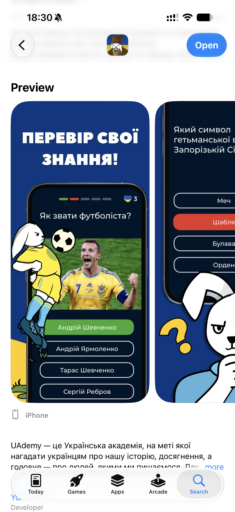
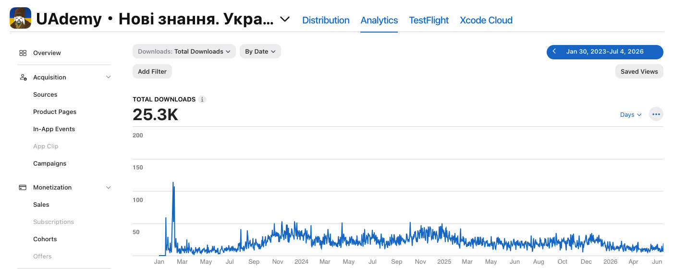
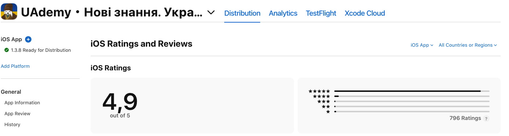

Case Study
A Ukrainian knowledge app — built and led a remote team of 6 through wartime constraints.
Ukraine's full-scale invasion began in February 2022. A wave of people wanted to reconnect with their roots — history, language, culture. UAdemy gave them a quiz-based learning experience they could use daily, on their phones, even in a shelter.
We built entirely remote across multiple time zones, with team members dealing with air-raid alerts, power outages, and relocation. Keeping velocity steady while keeping people's wellbeing in focus was the core leadership challenge.
Recruited and managed a cross-functional team of 6: iOS developers, a designer, and a content lead. Ran weekly syncs, set clear ownership, and kept the team psychologically safe during a stressful period.
Defined coding guidelines, Git branching strategy, and PR review norms from day one. Set up incident playbooks so any team member could handle a production issue without escalation.
Ran the full release cycle end-to-end — TestFlight beta, staged rollout, App Store submission, version negotiation with Apple review. Every build from 1.0.0 to 1.3.8 went through me.
Designed the metrics / log / trace taxonomy from scratch. Wired up dashboards and alerting via New Relic, Crashlytics, and AppCenter so the team had signal, not noise, when things went wrong.
Source: App Store Connect, Jul 2026



C#/.NET codebase compiled to a native iOS app, sharing business logic while using native iOS UI bindings. Let a lean team ship native quality without maintaining a separate Swift stack.
Firebase (Auth, Firestore, Cloud Storage, Crashlytics, Analytics) gave us a production-grade, low-ops backend — critical for a lean team operating under wartime conditions.
TestFlight for staged beta, automated build numbering, per-version changelogs, and a documented App Store submission checklist that any team member could execute.
New Relic for APM and custom dashboards, Crashlytics for crash symbolication, AppCenter for distribution. Unified metric/log/trace taxonomy defined upfront to avoid alert noise.